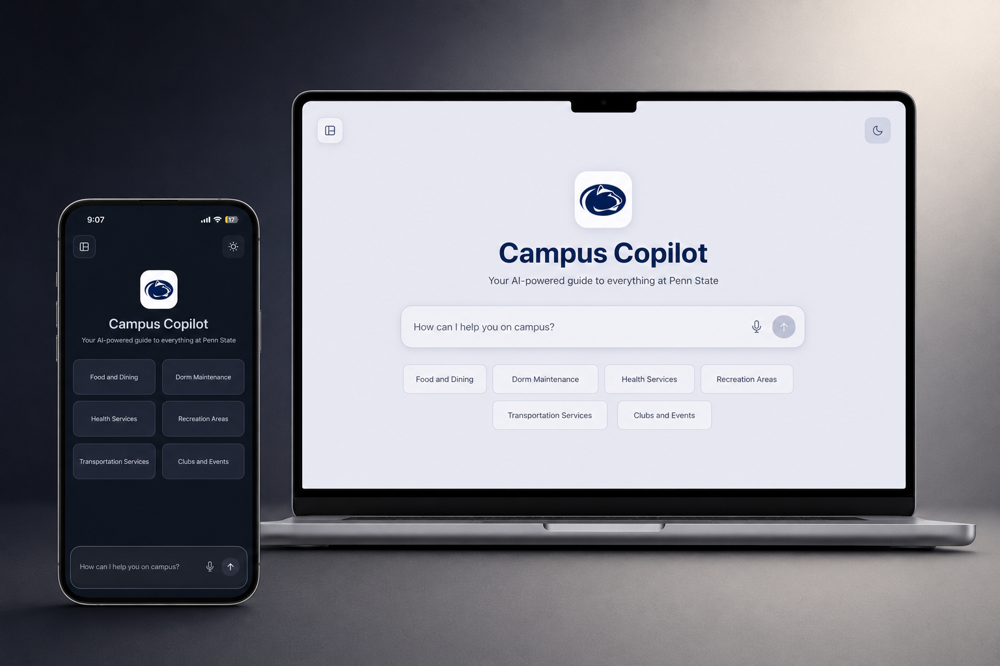
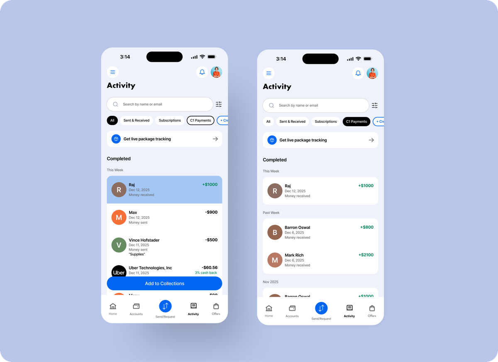

What are you looking for?
Campus Copilot
Conversational AI assistant for students
A conversational AI assistant designed to simplify campus onboarding and service discovery for 10,000+ incoming students annually.
 PayPal Activity
Order for a cluttered activity feed
Reimagining financial activity management for 200M+ users through smarter organization, personalized categorization, and reduced cognitive overload.
PayPal Activity
Order for a cluttered activity feed
Reimagining financial activity management for 200M+ users through smarter organization, personalized categorization, and reduced cognitive overload.


Executive Dashboard Grant oversight for program leadership An internal PennTAP dashboard built for executive stakeholders to monitor $40M funding distribution and long-term program performance at scale. Smart Charge Charging that acts before the anxiety does A proactive charging experience that addresses the low-battery anxiety experienced by nearly 90% of smartphone users.
PayPal Activity
Order for a cluttered activity feed
Reimagining financial activity management for 200M+ users through smarter organization, personalized categorization, and reduced cognitive overload.

DesigniQ An interior design app Transforming interior design exploration through an AI-enhanced platform that delivered 10× higher engagement and contributed to over 10M in sales growth.